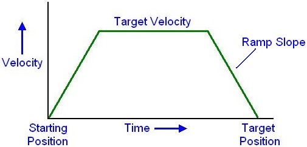

Velocity Ramp
Velocity Ramping is where the speed of a motor is gradually increased to a desired speed,
runs at that speed and then is gradually decreased to a stop. Robotic and automation
motors need to do this to eliminate the mechanical “shock” of a sudden start or stop of equipment.
If a car stopped instantly at a traffic light, we’d be thrown through the windshield!
The Arduino Firmware runs the stepper motors using velocity ramping. There are 10
different “slopes” that are settable for the velocity ramp: 0 = no ramping (instant start/stop) ...
9 = very gradual start/stop. When the Firmware starts up, the default slope is 6.
Use low values (1, 2, ..) for fast accelerations with light loads and high values (.., 8, 9)
for slow accelerations with heavy loads. It is highly recommended to use slow accelerations
when moving high inertial loads.
If we were to plot the velocity of a motor shaft (in steps per second) it would look like a trapezoid:
